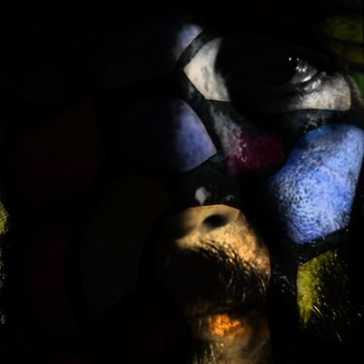

Atom Swan began playing music around the age of 11 when he stole his sisters guitar and tried to play along to his favorite musicians. After playing in garage rock, and folk punk bands he bought his first synthesizer. In the past decade Atom Swan has released over twenty albums mainly in the ambient and downtempo instrumental electronica genres. Visuals have also played an important part in his creative process having crafted over 50 music videos for his songs over the years.
instagram.com/atomswan